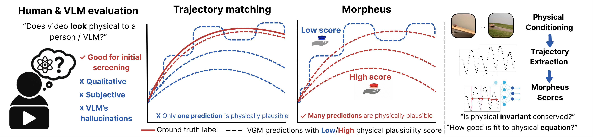

Recent advances in image and video generation raise hopes that these models possess world modeling capabilities—the ability to generate realistic, physically plausible videos. This could revolutionize applications in robotics, autonomous driving, and scientific simulation. However, before treating these models as world models, we must ask: Do they adhere to physical laws? Current evaluation methods rely on subjective judgments or trajectory matching, limiting their usage for physical reasoning estimation, where many generations could be physically plausible.
We introduce Morpheus, a benchmark for evaluating video generation models on physical reasoning. It features 130 real-world videos capturing physical phenomena, guided by conservation laws. Using those as conditioning for video generation, we assess physical plausibility using physics-informed metrics evaluated with respect to infallible conservation laws known per physical setting, leveraging advances in physics-informed neural networks and vision-language foundation models.
No videos available for this configuration yet.
Aggregated scores across all physical experiments (higher is better). We select the best scores between using the enhanced and plain versions of the textual prompt to represent the best model's ability. For comparison, real-world videos obtain Dynamical scores in the range of 0.96-0.99, and Physical Invariance score of 0.90 or above.
Loading aggregated score breakdown...
An example of the disappearance of the object (the projectile ball). Model: PyramidalFlow, multi-frame conditioning, enhanced text prompt.
An example of the duplication of the object (non-holonomic pendulum). Model: COSMOS, multi-frame conditioning, plain text prompt.
An example of the stillness of the object (double pendulum). Model: LTX, single frame conditioning, plain text prompt.
The analysis of the major reasons behind high discard rates reveals the absence of motion (i.e. stillness) and the presence of duplicate objects, as well as, to a lesser extent, the disappearance of the object from the video.
Loading discard breakdown...
No videos available yet for this experiment.
The relative difference between the score on the original, lab videos and augmented realistic settings. The realistic augmented settings appear to be much harder to predict.
Loading augmentation improvements...
Two common alternatives to Morpheus — comparing generated trajectories directly against a reference (trajectory matching) and asking a vision-language model to judge physical plausibility — both struggle to certify physically clean, real-world footage as physical. The following findings, drawn from the paper's appendix, motivate Morpheus's physics-informed scoring instead.
To isolate the failure mode of trajectory matching from any generative-model noise, we ran it real-vs-real: for each experiment, every pair of distinct real-world recordings of the same phenomenon was cross-compared using Physics-IQ (Motamed et al. 2026) overlap metrics. Since both videos in every pair are clean physical realizations, a metric that measured physical correctness should score them near-perfectly — instead, overlap is low across every category, showing that small, unobservable differences in initial conditions, mass distribution, or friction make trajectory matching reject physically valid futures. Morpheus, which scores functional adherence to governing equations and conserved invariants instead of matching paths, scores near-perfectly on these same real-world references.
| Experiment | Spatiotemporal IoU | Spatial IoU | Weighted Spatial IoU |
|---|---|---|---|
| Bouncing Ball | 0.100 | 0.274 | 0.169 |
| Collision | 0.021 | 0.184 | 0.112 |
| Double Pendulum | 0.087 | 0.561 | 0.408 |
| Falling | 0.164 | 0.396 | 0.342 |
| Holonomic Pendulum | 0.072 | 0.532 | 0.397 |
| Projectile | 0.010 | 0.040 | 0.034 |
| Rolling | 0.306 | 0.773 | 0.725 |
| Sliding Book | 0.189 | 0.240 | 0.202 |
| Spring | 0.189 | 0.298 | 0.233 |
Real-vs-real Physics-IQ overlap scores. Even perfect-vs-perfect physics yields low overlap — trajectory matching penalizes valid but divergent realizations, not physical incorrectness.
We also benchmarked against VideoPhy2-AutoEval (Bansal et al. 2026), a VLM fine-tuned for physical commonsense judgments, on both real-world recordings and generations from 9 models. Aggregated across all experiments, the VLM assigns real-world footage a Joint Physical Consistency (JPC) pass rate of only 23.6% (95% CI [16.1, 31.1]), barely above generated videos at 13.9% ([12.1, 15.8]) — the VLM fails to assign ceiling scores to real physics and barely separates real from generated, with no significant gap in rule adherence.
The per-category breakdown is the sharpest evidence: the VLM scores several physically clean real-world videos (bouncing ball, all three collision variants, three of four falling variants, both rolling-can variants, sliding book) at a 0% JPC pass rate, and for double pendulum it rates the generated videos as more physically plausible (41.4%) than the real ones (30.0%). An evaluator that cannot confidently certify that a real video obeys physical laws is fundamentally unsuited to benchmarking generative models — precisely what motivates Morpheus's physics-informed scoring.
| Experiment | Real-world JPC pass | Generated JPC pass |
|---|---|---|
| Falling ball | 100.0% | 34.5% |
| Rolling orange | 100.0% | 39.1% |
| Spring | 85.7% | 72.4% |
| Double pendulum | 30.0% | 41.4% |
| Holonomic pendulum | 27.8% | 13.8% |
| Bouncing ball | 0.0% | 5.7% |
| Collision (big hits small) | 0.0% | 4.6% |
| Collision (equal) | 0.0% | 0.0% |
| Collision (small hits big) | 0.0% | 3.4% |
| Falling apple | 0.0% | 0.0% |
| Falling marker | 0.0% | 0.0% |
| Falling tape | 0.0% | 0.0% |
| Projectile | 0.0% | 2.3% |
| Rolling empty can | 0.0% | 0.0% |
| Rolling full can | 0.0% | 0.0% |
| Sliding book | 0.0% | 5.7% |
Joint Physical Consistency (PC≥4 and rule adherence) pass rate assigned by VideoPhy2-AutoEval, real-world vs. generated, per experiment.